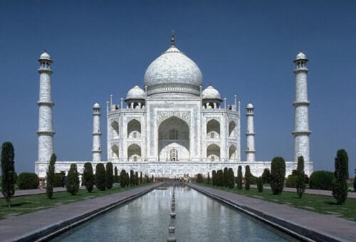
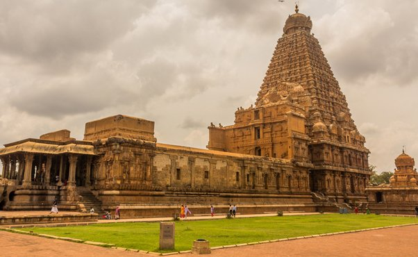
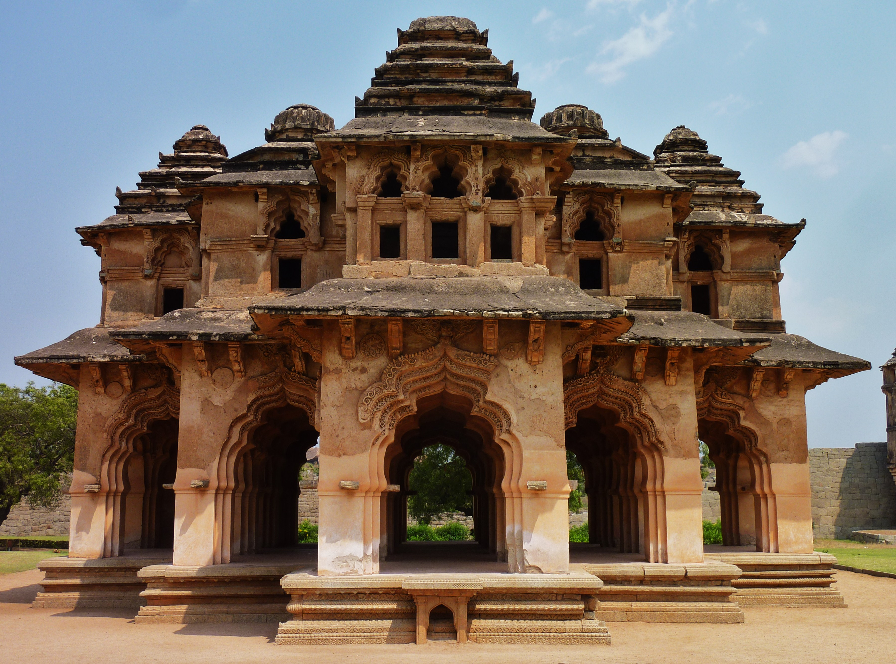

INDIA
TAJMAHAL
The Taj Mahal is an Islamic ivory-white marble mausoleum on the right bank of the river Yamuna in the Indian city of Agra. It was commissioned in 1632 by the Mughal emperor Shah Jahan to house the tomb of his favourite wife, Mumtaz Mahal; it also houses the tomb of Shah Jahan himself. The tomb is the centrepiece of a 17-hectare (42-acre) complex, which includes a mosque and a guest house, and is set in formal gardens bounded on three sides by a crenellated wall.
Construction of the mausoleum was essentially completed in 1643, but work continued on other phases of the project for another 10 years. The Taj Mahal complex is believed to have been completed in its entirety in 1653 at a cost estimated at the time to be around ₹32 million, which in 2020 would be approximately ₹70 billion (about US $1 billion). The construction project employed some 20,000 artisans under the guidance of a board of architects led by the court architect to the emperor, Ustad Ahmad Lahauri. Various types of symbolism have been employed in the Taj to reflect natural beauty and divinity.
The Taj Mahal was designated as a UNESCO World Heritage Site in 1983 for being "the jewel of Muslim art in India and one of the universally admired masterpieces of the world's heritage". It is regarded by many as the best example of Mughal architecture and a symbol of India's rich history. The Taj Mahal attracts more than 6 million visitors a year[3] and in 2007, it was declared a winner of the New 7 Wonders of the World (2000 – 2007) initiative.

BRIHADEESWARAR TEMPLE
Brihadishvara Temple (originally known as Peruvudaiyar Kovil) locally known as Thanjai Periya Kovil, and also called Rajarajeswaram, is a Hindu Dravidian styled temple dedicated to the god Shiva located in South bank of Cauvery river in Thanjavur, Tamil Nadu, India.It is one of the largest Hindu temples and an exemplary example of a fully realized Tamil architecture.It is called as Dakshina Meru (Meru of south). Built by Chola emperor Rajaraja I between 1003 and 1010 CE, the temple is a part of the UNESCO World Heritage Site known as the "Great Living Chola Temples", along with the Chola dynasty era Gangaikonda Cholapuram temple and Airavatesvara temple that is about 70 kilometres (43 mi) and 40 kilometres (25 mi) to its northeast respectively.
The original monuments of this 11th-century temple were built around a moat. It included gopura, the main temple, its massive tower, inscriptions, frescoes, and sculptures predominantly related to Shaivism, but also of Vaishnavism and Shaktism traditions of Hinduism. The temple was damaged in its history and some artwork is now missing. Additional mandapam and monuments were added in the centuries that followed. The temple now stands amidst fortified walls that were added after the 16th century.

MYSORE PALACE
The Mysore Palace, also known as Amba Vilas Palace, is a historical palace and a royal residence (house). It is located in Mysore, Karnataka. It used to be the official residence of the Wadiyar dynasty and the seat of the Kingdom of Mysore. The palace is in the centre of Mysore, and faces the Chamundi Hills eastward.The land on which the palace now stands was originally known as mysuru (literally, "citadel"). Yaduraya built the first palace inside the Old Fort in the 14th century, which was set ablaze and reconstructed multiple times. The Old Fort was built of wood and thus easily caught fire, while the current fort was built of stone, bricks and wood. The current structure was constructed between 1897 and 1912, after the Old Palace burnt down, the current structure is also known as the New Fort.

MEENAKSHI AMMAN
Arulmigu Meenakshi Amman Temple,[3] also known as Shri Meenakshi Sundareshwarar Temple, is a historic Hindu temple located on the southern bank of the Vaigai River[4] in the temple city[5] of Madurai, Tamil Nadu, India. It is dedicated to the goddess Meenakshi, a form of Parvati, and her consort, Sundareshwarar, a form of Shiva.[6] The temple is at the center of the ancient temple city of Madurai mentioned in the Tamil Sangam literature, with the goddess temple mentioned in 6th-century-CE texts.[7] This temple is one of the Paadal Petra Sthalams. The Paadal Petra sthalams are 275 temples of lord Shiva that are revered in the verses of Tamil Saiva Nayanars of 6th-9th century CE.

HAMPI
The Vijayanagara Empire was defeated by a coalition of Muslim sultanates; its capital was conquered, pillaged and destroyed by sultanate armies in 1565, after which Hampi remained in ruins.[3][6][7]
Located in Karnataka near the modern-era city of Hosapete, Hampi's ruins are spread over 4,100 hectares (16 sq mi) and it has been described by UNESCO as an "austere, grandiose site" of more than 1,600 surviving remains of the last great Hindu kingdom in South India that includes "forts, riverside features, royal and sacred complexes, temples, shrines, pillared halls, mandapas, memorial structures, water structures and others"
